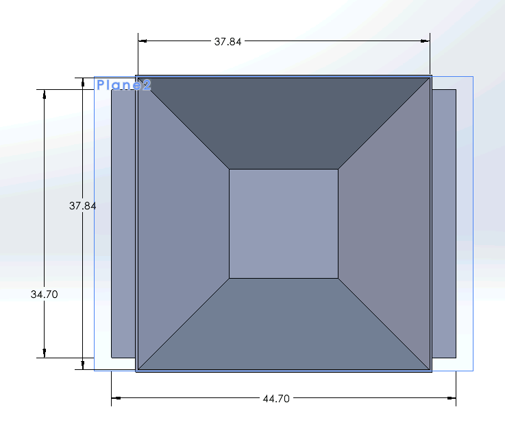
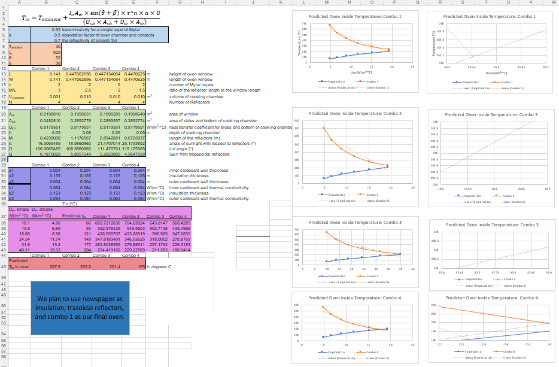
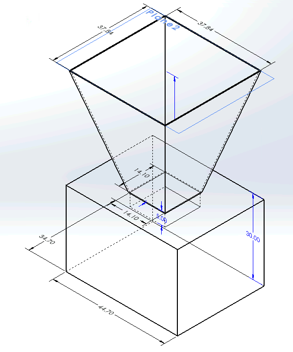
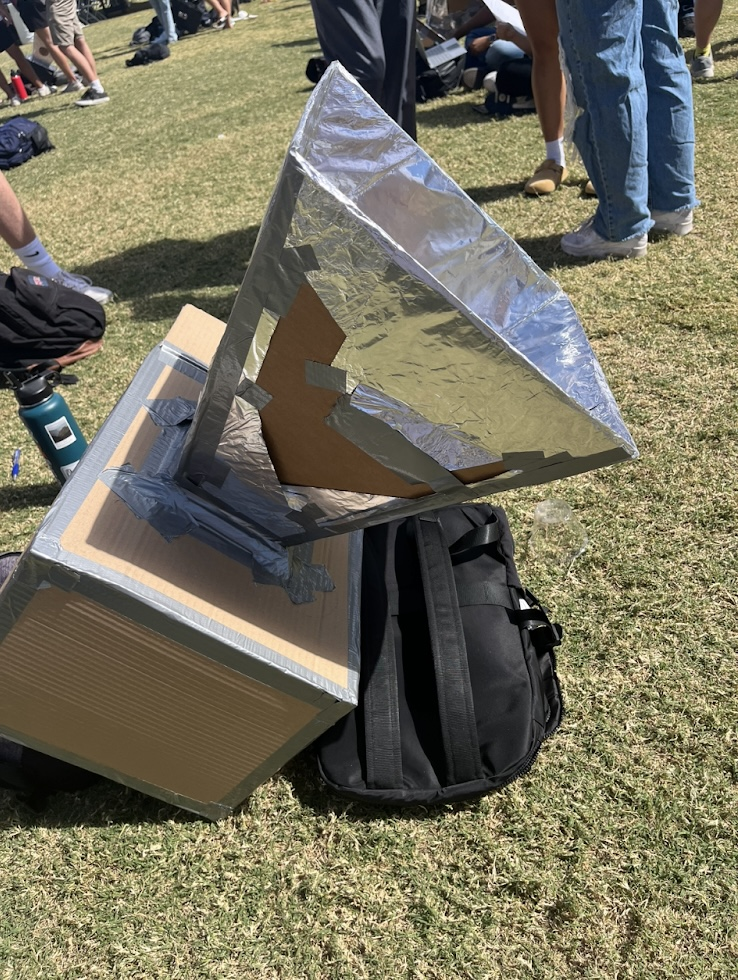
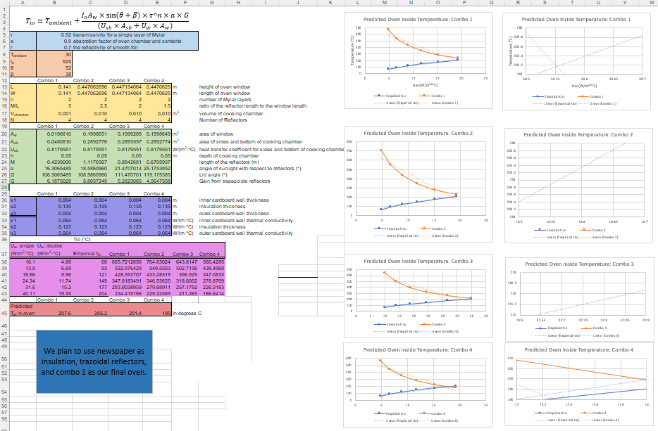
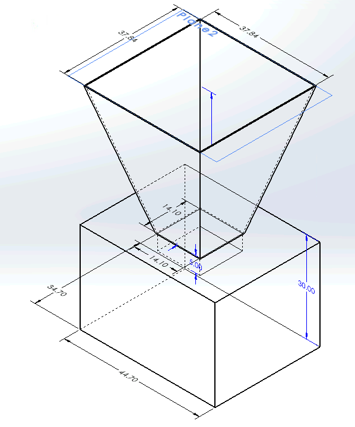
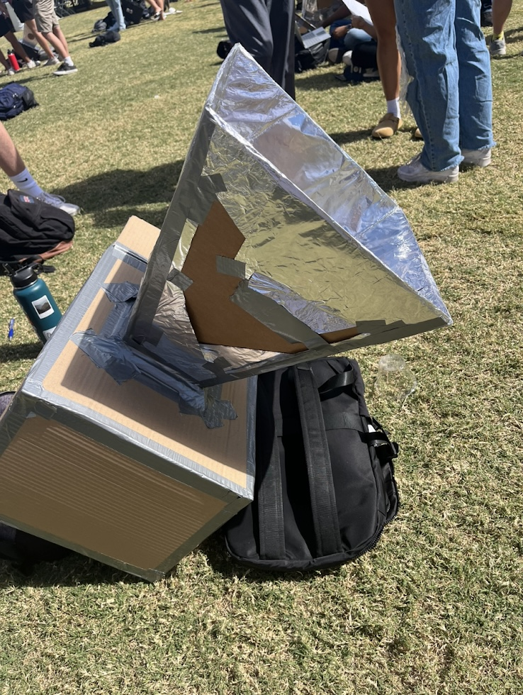

Solar Oven
Group project aimed at creating a low cost solar oven to cook a biscuit and reach an internal temperature as close to the calculated predicted temperature as posible.

Overview
Led a six-member team to design and construct a cost-effective solar oven capable of converting solar radiation into usable thermal energy for cooking. The goal was to achieve the highest internal temperature while following constraints and remaining as close to the predicted temperature as possible. This was done by applying thermodynamic and heat transfer principles to optimize performance.
Design Process
We began by calculating the theoretical maximum internal temperature of the oven using box dimensions, solar irradiance data, and heat loss equations. We used cardboard, aluminum foil, and clear plastic as primary materials to minimize costs and maximize reflectivity and insulation. I coordinated team meetings, delegated tasks, and ensured we were on track to finish on time. The final oven design featured reflective inner surfaces to concentrate sunlight onto a dark walled inner chamber, with a clear plastic cover to trap heat and prevent convective losses. Testing involved monitoring temperature changes under varying sun angles and weather conditions, as well as using a thermal camera to detect any leaks in the oven's structure.
Results
Despite partially cloudy conditions, the second iteration of our solar oven achieved an internal temperature of 165°C, approximately 80% of the predicted 205°C, successfully baking a biscuit. The project demonstrated that with only $5 of materials (a 90% cost reduction from similar options), efficient solar heating and sustainable cooking can be achieved using simple resources. The project strengthened my understanding of heat transfer, solar energy capture, and teamwork under real-world constraints.
Gallery

 




